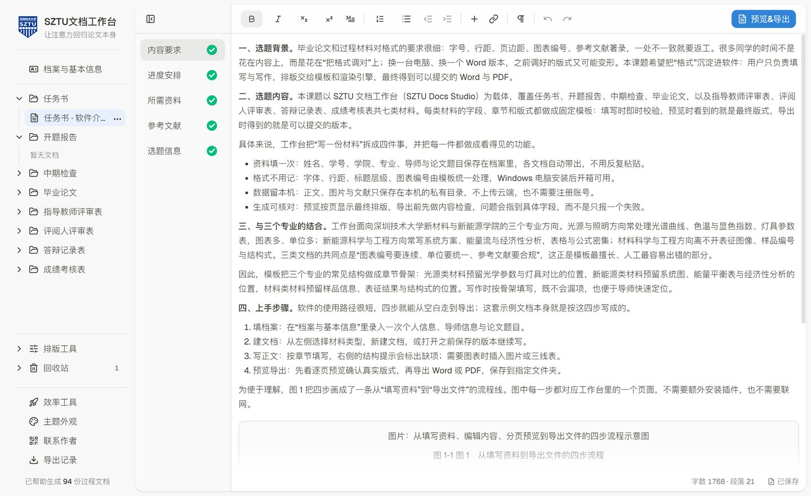
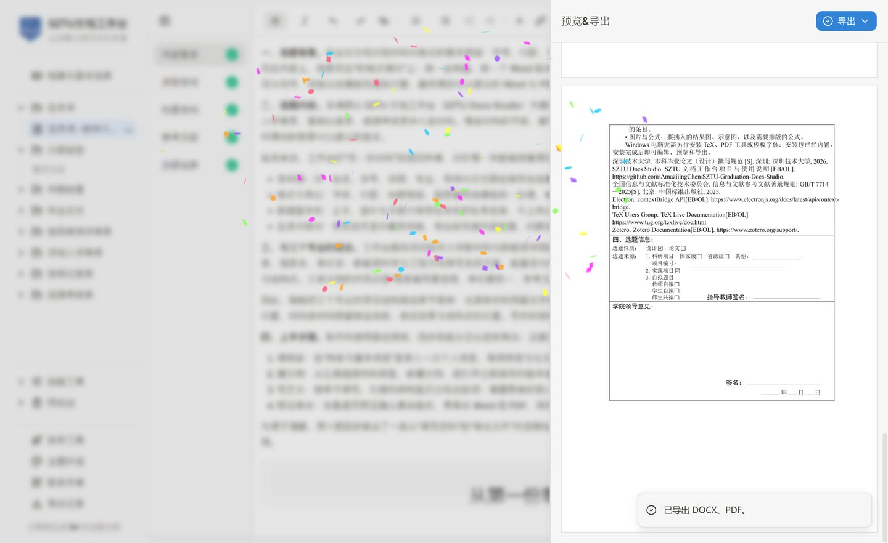
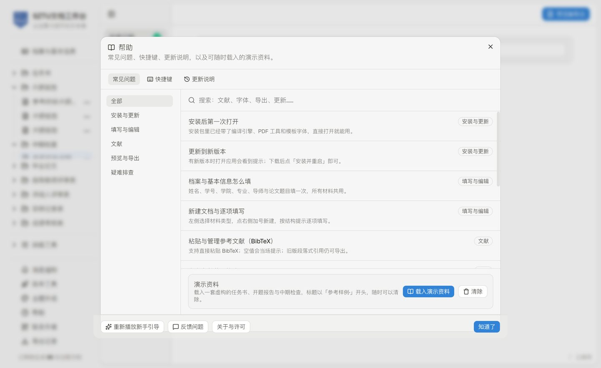

图版 01–03
它在屏幕上是什么样
填写、预览、导出在同一个窗口完成；截图取自 0.2.0 实际界面。



材料
一次填写，七类材料共用
姓名、学号、学院、专业、导师与论文题目只填一次，之后每份材料自动带出。
格式不是靠人对，是靠模板定
字号、行距、标题层级、图表编号与参考文献体例由模板统一处理。换电脑、换 Word 版本，版式不会跑。
导出前会先做内容检查：缺章节、超页数、文献字段为空，会指出具体位置，而不是只报一个「导出失败」。
- 任务书过程材料
- 开题报告过程材料
- 中期检查过程材料
- 指导教师评审表评审材料
- 评阅人评审表评审材料
- 答辩记录表评审材料
- 成绩考核表评审材料
- 毕业论文LaTeX 模板
安装
安装顺序
整个过程大约五分钟；第一次打开会看到分步引导。
- 第一步下载并运行
双击安装包。遇到 SmartScreen 提示，点「更多信息 → 仍要运行」。
- 第二步选择安装位置
保留默认目录即可；覆盖安装会升级程序，已有文档保留。
- 第三步填一次基本信息
姓名、学号、学院、专业、导师与论文题目，之后所有材料共用。
- 第四步新建、预览、导出
左侧选材料类型，右侧按提示填写；预览确认版式后导出 PDF 或 Word。
问答
常见问题
没覆盖到的问题，可以在应用内「帮助支持 → 反馈问题」直接发给我们。
Windows 提示「未知发布者」，是文件坏了吗？
不是。这是没有购买代码签名证书导致的。点提示框里的「更多信息」，再点「仍要运行」即可。想确认下载完整，可以用校样单里的 SHA-256 与文件对比。
需要一直联网吗？
编辑、预览、导出全部离线完成。只有检查更新、接收消息通知、发送反馈时需要联网；这些不使用也不影响写文档。
文档存在哪里？卸载会删掉吗？
文档保存在本机的应用数据目录，不上传云端。卸载程序默认不删除文档；要彻底清理，需要手动删除应用数据目录。
支持 Windows 7 或 32 位系统吗？
不支持。当前版本面向 Windows 10 / 11 的 64 位系统，因为内置的排版引擎与 PDF 工具只提供 64 位版本。
可以覆盖安装旧版本吗？
可以。装到同一目录会升级程序，档案与文档保留。跨大版本升级前仍建议备份应用数据目录。
毕业论文也在这里排版吗？
论文正文使用独立的 LaTeX 模板：在应用里下载模板，解压后在 LaTeX 编辑器或 Agent 中打开工程。过程材料与评审表在工作台里直接填。